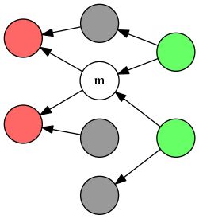
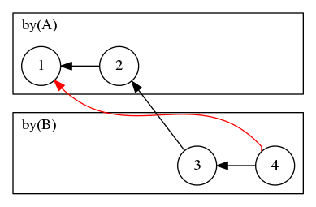

Ordering¶
Data structures¶
Partial orders¶
A partial order (wikipedia) is a set of elements with a binary relation ≤ that is reflexive, antisymmetric, and transitive. For convenience, we also define ≥ (after) such that a ≥ b ⇔ b ≤ a, and ⊥ (independent) such that a ⊥ b ⇔ (¬ a ≤ b ∧ ¬ a ≥ b). Note that in a partial order, ¬ (a ≤ b) does not imply a ≥ b; this is true however for total orders a.k.a. linear orders.
This can be visualised as a directed acyclic graph (DAG), where nodes represent the elements, and paths represent the relationships:

In the diagram above, where an edge a ← b means that a ≤ b,
- red nodes (and m [1]) are before m; all others are not-before m.
- green nodes (and m) are after m; all others are not-after m.
- grey nodes are neither before nor after m, but causally independent of it.
Using this, we begin to define our data model and its “real world” semantics. Each node m ∈ G represents a message [2]; a ≤ b (a before b) means “the author of b knew the contents of a, when they wrote b”. Transitivity also implies that they knew all the messages before a as well (i.e. anc(a), see below), when they wrote b. We’ll talk about how to enforce these semantics soon; for now we continue with its structural properties:
To reduce visual clutter later, let’s further define:
- anc[G](m) = {a ∈ G | a ≤ m} – m is a message, G is a graph or subgraph
- The set of ancestors of m, including m. This is the possible transitive causes of m, like the discrete equivalent of a light cone. Sometimes it’s obvious which G we are talking about, in which case we’ll omit [G] and write simply anc(m). [3]
- max(G) = {a ∈ G | ∀ v ∈ G: ¬ v > a} – G is a graph or subgraph
- The latest messages in G. Note that unlike with total orders, this is not a single element, but a set of nodes that are all causally independent of each other, i.e. form an anti-chain.
In our scheme, each message m declares its immediate predecessors (parents) P = pre[G](m). This is why we drew “←” for ≤ earlier, rather than “→” - the references belong to the later message; one cannot predict in advance what messages will come after yours. Predecessors means that ∀ p ∈ P: p < m, and immediate means that there is nothing between them, i.e. ∄ q: p < q < m.
The reason we mandate immediacy is to eliminate redundant information and simplify security checks; this will be explained in more detail at the end of the next section. For now, note that one consequence of immediacy is that all parents form an anti-chain, and that pre(m) ≡ max(anc(m) \ {m}). Over the whole session, it means that messages (nodes) and their parent references (edges) form a transitive reduction over the ≤ relationship.
| [1] | In natural language, ≤ is really before or equal to. We say before here because that’s shorter. We use ≤ instead of < because that makes most formal descriptions shorter. Unless otherwise specified, we’ll use the terms before for ≤ and strictly before for <, and likewise for after and ≥. |
| [2] | Some other systems treat send vs deliver (of each message m) as two separate events, but we don’t do this for simplicity. We mandate that the author delivers m to itself immediately after they send it to others, so nobody will never see an event that is after send[m] but not-after deliver[m], nor an event that is before deliver[m] but not-before send[m]. |
| [3] | (1, 2) Specifically, either we’ll talk about one graph at a time, or we’ll talk about different versions of the same history graph G₀ ⊆ G₁ where anc[G₀](m) ≡ anc[G₁](m). This is broken when we finally get to Partial visibility so we’ll bring back the [G] notation. This also applies to the other terms we define here of the form xxx[G](m). |
Causal orders¶
Now we formally introduce agents that can observe and generate events, that we mentioned informally when discussing the real world semantics of ≤.
In a causal order, each event m has exactly one author(m) and a set readers(m), both together called its members(m). We also define:
- by[G](u)
The set of all messages authored by u in G. This is totally-ordered on ≤ i.e. every element is either before or after every other, so it can be represented as a list. This property constrains the number of branches that may exist in any G, and helps it be “more linear”, and we can use this to prove performance bounds on various operations on G.
Unlike with anc[*](m) and pre[*](m), this is generally not constant even if G₀ ⊆ G₁, so notation-wise we’ll omit [G] less often.
- context[G](m): members(m) → anc(m) = u ↦ max1(by[G](u) ∩ anc[G](m))
This is a mapping (a.k.a dictionary, associative array) from each member of m (call this u), to:
- m itself, if u is the author of m; or else
- the latest message authored by u, that was seen by the author of m when they wrote m; or else
- ⊥ (null) if no such message exists.
Above, max1() gives the (single) maximum element of a totally-ordered set, or ⊥ if it is empty.
As with anc[*](m) and pre[*](m), notation-wise we’ll often omit [G] for the same reasons. [3]
Context is semantically equivalent to a vector clock - a mapping from each entity to some representation of the latest event that the clock’s owner saw from them. As with vector clocks, this contains redundant information, and may be locally calculated recursively from pre(m) as follows:
- context(m)[u] =
- if author(m) = u : m
- else: max1({ context(p)[u] | p ∈ pre(m) } \ {⊥})
TODO: probably move most of the rest of this section to the appendix, it doesn’t add that much insight or new constructive models.
But watch out! A minor “optimisation” will make this susceptible to re-ordering attacks:
- context(m)[u] =
- if author(m) = u : m
- else if (∃ p ∈ pre(m): author(p) = u) : p – insecure optimisation
- else: max1({ context(p)[u] | p ∈ pre(m) } \ {⊥})
The attack allows malicious authors to rewind the context they are supposed to declare with each message; vector clocks can also suffer from this if the implementation makes too many naive assumptions.
The problem stems from trusting pre(m) too much in the latter definition. For example, C should not be allowed to claim that their last-received-from-A is 9, if they’ve already claimed that their last-received-from-B is 12, but in message 12, B claimed that their last-received-from-A is 10. A more simple version of this with only 2 members is in the diagram below:

We must forbid the 1 ← 4 reference. More generally, we want context to always advance, never rewind. We’ll call this context consistency, and formally it means:
A related concept is parent consistency - we must never reference parents of strictly-earlier messages, since it is redundant and we should instead simply reference the strictly-earlier message itself. Formally:
∀ m’, m ∈ G: m’ < m ⇒ ∀ p’ ∈ pre(m’), p ∈ pre(m): ¬ p ≤ p’
These properties are quite complex. But we don’t have to check them directly:
Theorem: transitive reduction entails parent consistency. Proof sketch: if m’ < m then ∃ p ∈ pre(m): m’ ≤ p < m. Since ≤ is transitive, ∀ p’ ∈ pre(m’): p’ < p ≡ anc(p’) ⊂ anc(p). By transitive reduction, no other q ≠ p ∈ pre(m) may belong to anc(p), i.e. ∀ q ≠ p ∈ pre(m): q ∉ anc(p’) ≡ ¬ q ≤ p’. Earlier we had p’ < p so this holds even if q = p, i.e. ∀ q ∈ pre(m): ¬ q ≤ p’. ∎
Theorem: parent consistency entails context consistency, even if using the insecure optimisation above. (If using our original secure definitions, it holds regardless of parent consistency.) Proof sketch: this is long-winded and not interesting or insightful; do it later and put it in the appendix.
Based on this result, we mandate that real encodings of m must not encode context(m) but only pre(m), and readers must check that it is an anti-chain (see below) before committing it to their local history graph. This way, we get the other two properties for free. If needed, we can calculate context(m) from pre(m) locally, and this remains secure regardless of naive optimisations.
As a general principle, redundant information is a security liability: it must be checked for consistency, using the canonical sources of that information - but then we might as well use those sources to directly calculate it. In these specific case, we see that enforcing immediacy and anti-chain parents actually lets us achieve some stronger guarantees for free, i.e. protection against rewinding of vector clocks.
Invariants¶
To summarise, here are invariants on our causal order data structure.
- ≤ is reflexive
- ∀ a: a ≤ a
- ≤ is anti-symmetric:
- ∀ a, b: a ≤ b ∧ b ≤ a ⇒ a = b
- ≤ is transitive:
- ∀ a, b, c: a ≤ b ∧ b ≤ c ⇒ a ≤ c
- pre(m) is an anti-chain; the history G forms a transitive reduction of ≤:
- ∀ m: ∀ p, p’ ∈ pre(m): p = p’ ∨ p ⊥ p’
- by(u) is a chain / total-order:
- ∀ u: ∀ m, m’ ∈ by(u): m ≤ m’ ∨ m’ ≤ m
Security¶
Security dictates that we have some way to enforce the real-world semantics that we chose earlier, under the invariants defined above. Let’s proceed:
Enforcing semantics of ≤¶
- a ≤ b (real-world semantics)
- The author of b knew the contents of a, when they wrote b.
Our mechanism to achieve this securely (in a sense that we’ll define) is as follows. First, we deduce that parent references must at least be immutable and unforgeable. That is, for a given message m that references p using a string s[p], it must be the case that an attacker that sees s[p] and wishes to break our semantics, cannot create a new message p’ that s[p] could also refer to. If they could, then our semantics is trivially broken.
One simple option to achieve this unforgeable property, is to let s[p] be a hash of the ciphertext of message p. Those familiar with Git will see the similarities with its data model. Defining message identifiers explores this and alternatives in more detail.
This leaves attackers with two ways to know a valid reference s[p]: (1) derive it from its ciphertext, or (2) see it elsewhere, e.g. referenced by a child of p, without having seen p itself. (1) does not break our semantics, but (2) does. That is, in message m, the attacker could make a false declaration that they’ve seen a real message p (breaking our semantics), if they see someone else refer to p in a third message n where p ∈ pre(n) - and no-one can detect whether this declaration is false or true. (Note that this is a distinct case from falsely declaring that one has seen a fake i.e non-existent message, which can be detected as described further below.)
We assume that people won’t do this - there is no strategic benefit in claiming to know something that you are entitled to know but temporarily don’t. The worst that may happen is that someone issues a challenge you cannot answer, but only your reputation would suffer. Also, if you haven’t seen the message, you are unable to verify that the reference is indeed valid, so someone else might be trying to trick you. If this security assessment turns out to be wrong, there are measures we can take to close this hole, but they are more complex so we ignore them for now.
Enforcing invariants¶
First, note the distinction between enforcing the structure vs semantics of
invariants. We enforce structure by writing correct code for our causal order
data structure, and this can be statically checked e.g. that a <= a returns
true for all a. By contrast, enforcing semantic reflexivity means to
enforce that: whenever our code does return true in response to executing a
<= a, this also has the real-world semantics that “the author of a knew the
contents of a, when they wrote a”.
For reflexivity, this is true by definition of our chosen semantics for ≤, as we just stated. No run-time checks are required.
For anti-symmetry, we gain this if our parent references are unforgeable as required by the previous section. Then, there is no way to generate distinct messages a, b such that both a ≤ b (i.e. b references a, perhaps indirectly) and b ≤ a (likewise). This protection is achieved when we specify the hash algorithm for the protocol; no run-time checks are required.
For transitivity, we must show messages to the user in topological order. For each incoming m, if any of its parents p ∈ pre(m) have not yet been delivered [4], we place m in a buffer, and wait for all of pre(m) to be delivered first before delivering m. This allows us to verify that the parent references are actually of real messages. To protect against DoS, the buffer should be limited in size; see the next section for details.
The result is that we deliver all of anc(m) before we deliver m, i.e. the user sees anc(m) before m. This applies for messages the user sends too, assuming we set the parents correctly. This achieves transitivity on the local side, but it is quite hard to detect whether other members are doing this. (One option is to require m to mention all of anc(m), but obviously this costs too much bandwidth.) But earlier, we argued that there is no incentive for users to cheat this; we will make this assumption going forward.
For transitive reduction, we do this locally using only information from anc(m). Since messages are only added to the data structure in topological order, everyone has this information so they can enforce it themselves. Messages that break this may simply be dropped, with a local UI warning as to the source. The merge algorithm for DAGs includes a check that the inputs form an anti-chain, and it may be run on the pre(m) of every message accepted, including for single-parent messages.
For author total ordering, this is detectable only when someone accepts messages in both forks, which not everyone else might see. Users detecting this must refuse to participate any further in the session, which (via mechanisms described in the next chapter) hints to other members that something is wrong.
To help others narrow down the cause of this non-participation, the detecting user should re-broadcast all messages within both forks to everyone else, then leave the conversation with a NACK error message that references both forks. To be clear, this is not security-critical since these messages might be dropped by an attacker; its purpose is to give a UX improvement in the case where the attacker does not drop packets. Note that one of the references may have to be indirect if we already replied to the other fork, to preserve transitive reduction. We should never need to do this for a triple fork; NACK should be immediate upon detecting a double fork.
(TODO: enumerate all possible error reasons for NACK messages)
| [4] | Here, deliver is standard distributed-systems terminology, and means to make the message available to higher layers for subsequent operations, such as displaying in a UI. However, in colloquial messaging contexts, “deliver” sometimes means “remote completion of a send”, e.g. as in “delivery receipt”; so sometimes we’ll use the term accept instead for the former concept. |
Detecting transport attacks¶
Most of these are a straightforward consequences of the previous sections, but those are rather abstract so we’ll re-describe them in terms of defences against “real-world” attacks.
By transport attacks, we mean replays, re-orders, and drops of packets, by an attacker that can affect the physical communications infrastructure. We assume that external cryptographic authentication will allow us to detect packets injected by a non-member.
Detecting replays is easy, assuming that our decryption scheme verify-decrypts duplicate packets so that they have the same parents (and contents and other metadata); then this will be deserialised into an already-existing node in our transcript graph. If we cache the ciphertext (and there is reason to), we don’t even need to verify-decrypt it the second time.
Enforcing transitivity is basically an exercise in correcting the order of messages, so we are already covered there.
For drops, let’s consider causal drops first - drops of messages that caused (are before) a message we have already received. Messages in the delivery buffer will have three types of parents: those already accepted, those also in the buffer, and those that haven’t been seen yet. For the last case, this is either because the parent p doesn’t exist (the author is lying), or because the transport is being unreliable or malicious.
We don’t assume the transport is reliable, so we should give it a grace period within which to expect p to arrive. After this expires, we should assume that we’ll never receive p for whatever reason, emit a UI warning (“referenced message p didn’t arrive on time”), and drop messages that transitively point to p from the buffer. This is safe even if p turns out to be real and we receive it later; others’ reliability schemes will detect this and resend us the dropped messages. If we do eventually receive p later, we should cancel the warning, or at least downgrade its severity, based on how timely we expect the transport to be.
If we never receive p, we cannot know for sure whether the author was lying or the transport was malicious. In the basic case, there is no incentive for the author to lie, but if we just assume the transport is malicious (and take some action A in response to this) then ironically we give the author an incentive to lie - they can frame the transport to induce us to do A, which may have unintended consequences. So, we should be careful in how we communicate this fault to the user, and not imply blame on any party.
Detecting non-causal drops - drops of messages not-before a message we’ve already received, and therefore we don’t see any references to - is more complex, and we will cover this in freshness.
If the first message has replay protection (e.g. if it is fresh), we also inductively gain this for the entire session. This is because each message contains unforgeable references to previous parent messages, so everything is “anchored” to the first non-replayable message. In other words, this ultimately depends on the session membership control protocol, which we discuss elsewhere. TODO: link
Other topics¶
The following sections talk about common “application-level” topics that are consequences of our scheme, including defences of some criticisms, that we have come across in various informal discussions.
They do not add new constructive ideas on top of what we already discussed, so feel free to skip to the next chapter if you only want to read about what our proposals are.
Buffering and asynchronous operation¶
Our strong ordering (transitivity) approach requires a reliable transport. If a message is dropped, this prevents later messages from being displayed. Note that this is not a security concern, but a reliability one - if an attacker wants to prevent those messages from being displayed, and is able to drop the first message, they can just drop the later messages as well.
We can improve reliability with end-to-end recovery (explained next), but this is less effective in an asynchronous scenario, i.e. where members may not online at the same time. We depend more heavily on a third-party service to store-and-forward messages in an intelligent way, e.g. to resend ciphertext even if the original author is offline. In the worst case where no two members are online simultaneously, this dependency becomes an absolute requirement.
Such a service must provide the interface “send ciphertext T to recipient R”. By itself, this should not reduce data security, since we assume there is an attacker that already stores all ciphertext. (Metadata security is a harder problem that is outside of our current scope - but at least this architecture is no worse than existing transports.)
This adds extra development cost in a real application: at present there are architectural issues with some existing asynchronous delivery or “push” systems that make this sort of reliability awkward; email works, but leaks significant mounts of metadata. However, we believe that there is demand for a general reliable asynchronous transport as a piece of core internet infrastructure, which would be useful for many other services and applications too. So, at least within the scope of this document, we will work with this assumption, to clearly divide our problem between security and asynchronous reliability.
We may also explore quasi-reliability schemes, that avoid buffering but still provide strong ordering. For example, if the transport can deliver large packets without splitting them, then whenever the user sends a message m, we can “piggyback” all messages from anc(m) that are not fully-acked alongside m. So no-one will ever see messages out-of-order, thus avoiding buffering. This exists already as an ad-hoc practice in email, where often people leave a quoted parent in the body of their own message.
This is not a full replacement for a reliable transport - if unacked, packets get larger and larger, and the ability to deliver them in one piece effectively becomes a reliability problem. However, it could greatly improve the buffer waiting period for the majority of unreliable cases, and does not require any complex behaviour on the part of the always-online store-and-forward server.
Other approaches forfeit reliability, and display messages immediately upon receipt even if received out-of-order. Such strategies necessarily break our strong ordering property which we consider critical to security, so we won’t discuss them further here - but see Consistency without reliability for a more detailed exploration down this path.
The importance of strong ordering¶
It is common for messages to depend on context for their precise meaning, in both natural and computer languages; delivering such messages out-of-order is not even semantically correct. We conjecture that these context-dependent messages are a majority, based on briefly scanning our own mailboxes and thread histories. One might argue that humans are pretty good at reconstructing the order ourselves, but this places an extra burden on the user.
Some have argued that strong ordering is not important for asynchronous and/or high-latency use cases, and therefore buffering is not worth the supposed UX cost. But receiving messages out-of-order is itself a UX cost. Futher, strong ordering may not be important in some cases, but this is definitely not always true - we can imagine scenarios where critical meetings might take place over several days, where integrity is more important than timeliness. Therefore, we think it’s prudent to prioritise achieving strong security then try to optimise the UX around this, rather than vice-versa.
Generally, even asynchronous transports are mostly reliable - otherwise they would have no users. Now, let’s consider this minority case where out-of-order delivery might actually occur. Suppose Alice sends message (1) then (2), and Bob’s machine receives (2) after time t. The only case where Bob would prefer to be shown (2) before/without (1) being available, is if (2) does not require (1) to be understood correctly. As previously conjectured, we assume this is a minority (of an outer minority). Then, we have the following cases:
- Bob receives (1) after a further time t’ < t.
- Bob receives (1) after a further time t’ > t.
- Bob doesn’t receive (1) at all, after some timeout T.
We argue that most users won’t notice (a), that (b) and (c) are more problems of the transport that incentivises users towards better transports regardless of whether buffering is done, and that (c) can further be effectively handled under our system via timeouts and by restarting the session, such as described in Messages received out-of-order.
One might argue that scenarios where strong ordering is security-critical is also a minority, but we feel it’s better to achieve this much-needed security for this minority, than to achieve slightly more convenience for another less-needy minority.
TODO: describe a hybrid scheme, using lossy ratchets to derive a “session key”, and using this as the long-term key (instead of the real long-term key) in a strongly-ordered ratchet. this prevents “drop attacks” from forcing users to repeatedly use their long-term key for messaging material.